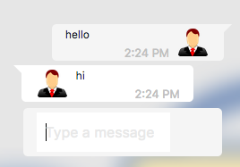

How to implement a chatbot with Scratchat?
updated: Dec. 4, 2017
First, drag n' drop
To implement a chatbot, the format goes like this:
As the picture above shown, the simpliest way to create an if-else statement. You can check user's input by using the "user input" block, and use the “ ” block to type what your desired condition.
In this case, the example is checking if the user entered "hello". If "hello" is entered, then it will respond with "hello".
Then, hit the button TEST.
This button will generate a simple test chatbot for you. Once you finish implementing the bot, you can have a test run by clicking TEST button.
In this case, we will use our previous example, and the example output automatically set the answer delay to 2 seconds. Here is the sample output:
Stick around! More features are yet to come.
This is a project that is under development. And we will add more features in the future. So remember to come back!